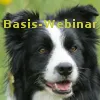
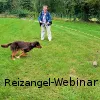
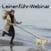
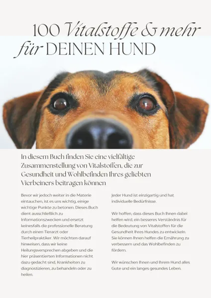

Basis-Webinar Teil 1
Produktprofil · Marktplatz-Daten 2026-10-14 · Verkaufsseiten-Recherche 2026-10-14 · Kategorien: Animals & Pets
- Basis-Webinar Teil 1 ist ein/e Webinar in Animals & Pets, vertrieben über den Digistore24-Marktplatz von Anbieter khaphom5, gelistet seit 2016-12-27.
- Listenpreis $46.91 (single payment) — Checkout, Auslieferung und Rückerstattungen laufen über Digistore24 selbst, nicht über den Anbieter.
- Käuferschutz: keine standardisierte Garantie-Formulierung gefunden — Rückerstattungsbedingungen vor der Zahlung auf der offiziellen Seite prüfen.
Interesse an Basis-Webinar Teil 1? Aktueller Preis, Boni und Garantiebedingungen finden Sie auf der offiziellen Seite des Anbieters:
Offizielle Verkaufsseite ansehen
Affiliate-Link (Werbung) — wir verdienen ggf. eine Provision, ohne Mehrkosten für Sie.

Marktplatz-Daten
| Produkttyp | Webinar |
|---|---|
| Preis | $46.91 (Single payment) |
| Garantie/Rückgabe | Laut Verkaufsseite des Anbieters — vor dem Kauf auf der offiziellen Seite prüfen |
| Anbieter | khaphom5 (gelistet seit 2016-12-27) |
Marktplatz-Beschreibung des Anbieters
Basis-Webinar: Grundlagen in der Hundeerziehung Wenn Du nur möchtest, dass Dein Hund kommt, wenn Du ihn rufst, hört sich das zwar ganz einfach an, ist aber eigentlich die schwerste aller Übungen. Wenn Du daran arbeiten möchtest oder auch nur möchtest, dass Dein Hund ein glückliches Hundeleben führt, bist Du in diesem Basis-Webinar genau richtig. In diesem Webinar lernst Du, wie Du für Deinen Hund eine wichtige Führungspersönlichkeit und ein guter Sozialpartner wirst. Wie Du Dich sinnvoll mit ihm beschäftigst und auch artgerecht und ethisch vertretbar vermittelst, wenn Du Dinge nicht möchtest. Ebenso siehst Du in verschiedenen Trainingssequenzen, wie man Signale wie Sitz, Down und das Signal fürs Kommen aufbaut und natürlich wie er lernt, Besitz freiwillig abzugeben, usw. Inhalte unter anderem: Einführung in das Thema Natural Dogmanship verschiedene Konditionierungsformen (unser Schwerpunkt: soziales Lernen) Die Umfelder (Haus, Garten, alles außerhalb des Gartens) Struktur zu Hause Artgerecht, verständlich und ethisch vertretbar Tabus, bzw. Grenzen setzen Sinnvoller Aufbau von Signalen wie Sitz, Down, Bei und das FREIWILLIGE Abgeben von Besitz Umgang mit der Leine Aufbau von (für den Hund) sinnvoller gemeinsamer Beschäftigung Aufbau von Steadiness (konstantes Ausführen von Signalen) Start der Sucharbeit Wie gehe ich bei Hundebegegnungen vor und wie starte ich sinnvoll Hundekontakt und vieles mehr Mit diesem Webinar erhälst Du eine umfassende Erziehungsgrundlage zum Beziehungsaufbau für Dich und Deinen Hund. Über 2 Stunden und 30 Minuten geballte Wissensvermittlung und Praxisvideos. Wir haben es für Dich in 3 aufeinander aufbauende Teile aufgeteilt, so hast Du es einfacher beim Download. Wir wünschen Dir viel Spaß bei diesem Webinar und freuen uns über viele Teilnehmer.
Von der Verkaufsseite des Anbieters
Seitentitel: Basis-Webinar
Hauptüberschrift
Basis-Webinar
Basis-Webinar: Grundlagen in der Hundeerziehung
Abschnitts-Überschriften
- 10 thoughts on "Basis-Webinar"
Einstiegstext
Ich bin die Fürsprecherin für Hunde mit ihren Menschen, für eine harmonische Mensch-Hund-Beziehung.
Wenn Du nur möchtest, dass Dein Hund kommt, wenn Du ihn rufst, hört sich das zwar ganz einfach an, ist aber eigentlich die schwerste aller Übungen.
Wenn Du daran arbeiten möchtest oder auch nur möchtest, dass Dein Hund ein glückliches Hundeleben führt, bist Du in diesem Basis-Webinar genau richtig.
In diesem Webinar lernst Du, wie Du für Deinen Hund eine wichtige Führungspersönlichkeit und ein guter Sozialpartner wirst. Wie Du Dich sinnvoll mit ihm beschäftigst und auch artgerecht und ethisch vertretbar vermittelst, wenn Du Dinge nicht möchtest.
CTA-Buttons: „Starterangebot"
Recherche-Methode: rohes HTML · 1172 Wörter · Qualität: rich · recherchiert am 2026-10-14. Vollständige Recherche-Datei (MD) ↗
Wie Produkte dieser Art geliefert werden
Allgemeiner Hinweis zu diesem Produkttyp (keine anbieterspezifische Anleitung): Webinare sindLive-Online-Sitzungen: nach der Anmeldung erhalten Sie den Link per E-Mail für den Termin. Für die genaue Anwendung von Basis-Webinar Teil 1 sind die offizielle Verkaufsseite und die enthaltenen Materialien maßgeblich.
Gut zu wissen
- Keine Garantie-Formulierung in unserer Recherche gefunden — bestätigen Sie das Rückgabefenster auf der offiziellen Seite, bevor Sie kaufen.
Was ist Basis-Webinar Teil 1?
Basis-Webinar Teil 1 ist ein/e webinar in der Kategorie Tiere & Haustiere des Digistore24-Marktplatzes, veröffentlicht von Anbieter khaphom5 und im Verkauf seit 2016-12-27. Der Anbieter beschreibt es so: "Basis-Webinar: Grundlagen in der Hundeerziehung Wenn Du nur möchtest, dass Dein Hund kommt, wenn Du ihn rufst, hört sich das zwar ganz einfach an, ist aber eigentlich die schwerste aller Übungen. Wenn Du daran arbeiten möchtest oder auch nur möchtest, dass Dei" (Marktplatz-Beschreibung des Anbieters, leicht gekürzt).
Basis-Webinar Teil 1 Preis: was Sie zahlen
Der Marktplatz listet Basis-Webinar Teil 1 zum $46.91 Preis (single payment). Digistore24 fügt im Checkout die gesetzliche Steuer Ihres Landes hinzu — dort sehen Sie den Endbetrag vor der Zahlung. Eine separate Plattformgebühr gibt es nicht; Anbieter können eigene Upsells nach dem Checkout anbieten.
Basis-Webinar Teil 1 Rückerstattung und Geld-zurück-Garantie
Wir haben keine standardisierte Garantie-Formulierung auf der Verkaufsseite gefunden. Rückerstattungen für Digistore24-Käufe laufen über die Plattform: Antrag über den Support-Link in Ihrer Bestell-E-Mail, innerhalb des Garantiezeitfensters, das im Checkout angezeigt wird. Praktischer Rat: Entscheiden Sie innerhalb des Fensters — wenn das Produkt unter den Erwartungen bleibt, erstatten lassen statt irren lassen.
Mechanik im Detail: So funktionieren Digistore24-Rückerstattungen.
Für wen ist Basis-Webinar Teil 1 geeignet?
Basierend auf der Tiere & Haustiere-Einordnung und der single payment-Abrechnung richtet sich Basis-Webinar Teil 1 an Käufer, die tiere & haustiere-Lösungen suchen im mittleren Preisbereich. Der ehrliche Test ist nicht die Kategorie, sondern Ihre eigene Situation: Werden Sie es realistisch innerhalb des Garantiefensters nutzen? Wenn ja, ist der Preis eine Investition; wenn nein, ist er Ballast — unabhängig von der Qualität.
Ist Basis-Webinar Teil 1 seriös? Was Sie vor dem Kauf prüfen
Wir bewerten keine Seriosität — das kann niemand, ohne das Produkt zu nutzen. Prüfbare Punkte, alle auf dieser Seite: die Marktplatz-Historie des Anbieters (im Verkauf seit 2016-12-27), die wörtlichen Verkaufsseiten-Auszüge unten (gekennzeichnet als Anbieteraussagen — deren Werbung, nicht unsere Empfehlung), die Garantiebedingungen im Checkout und die Auslieferungsart. Vorsichtsignale bei jedem Angebot: Countdown-Dringlichkeit gepaart mit vagen Rückerstattungsbedingungen, Testimonials ohne Datum und Anbieterseiten, die den Preis bis zum Checkout verstecken.
Wie kommen Sie nach dem Kauf an Basis-Webinar Teil 1?
Der Checkout läuft über Digistore24. Nach der Zahlung: Webinare sindLive-Online-Sitzungen: nach der Anmeldung erhalten Sie den Link per E-Mail für den Termin. Bewahren Sie die Bestell-E-Mail auf — sie ist Ihr Schlüssel zum/d zur webinar, zu Rückerstattungsanträgen und zum Digistore24-Käufersupport.
Basis-Webinar Teil 1 Erfahrungen: so recherchieren Sie richtig
Die meisten „Erfahrungsberichte" zu Marktplatz-Produkten sind Affiliate-Inhalte — einschließlich Seiten wie dieser, die an Käufen mitverdienen. Behandeln Sie jeden Bericht (auch unseren) als Ausgangspunkt und prüfen Sie gegen Primärquellen: die Verkaufsseite des Anbieters, die Digistore24-Rückerstattungsrichtlinie und — für tiere & haustiere — unabhängige Communities außerhalb des Affiliate-Ökosystems. Auf dieser Seite sind die Verkaufsseiten-Auszüge unten wörtlich zitiert, damit Sie die Aussagen des Anbieters bewerten können, ohne wegzuklicken.
Wie Sie Basis-Webinar Teil 1 sicher kaufen
- Öffnen Sie die offizielle Verkaufsseite und lesen Sie das vollständige Angebot.
- Bestätigen Sie Endpreis und Garantiezeitfenster auf der Digistore24-Kassenseite — sie ist bindend, kein Vergleichsportal.
- Zahlen Sie innerhalb des Digistore24-Checkouts (niemals per Überweisung oder Off-Platform-Links).
- Speichern Sie die Bestellbestätigung; notieren Sie die Rückerstattungsfrist im Kalender.
- Prüfen Sie zügig. Der Digistore24-Käufersupport hilft, wenn der Anbieter nicht reagiert.
Vollständiges Recherche-Archiv für dieses Produkt (Markdown: kompletter Marktplatz-Datensatz + wörtliche Verkaufsseiten-Auszüge): Basis-Webinar Teil 1 — vollständiges Datenarchiv (Markdown-Datei: 21293-basis-webinar-teil-1.md).
- Listenpreis & Abrechnung — Quelle: offizielle Digistore24-Marktplatz-API, Stand 2026-10-14. Maßgeblich für den aktuellen Preis ist immer die Kassenseite.
- Verkaufsseiten-Zitate — Quelle: https://rheinische-hundeschule.de/Start/basis-webinar/, abgerufen 2026-10-14 (Methode: rohes HTML). Verify: offizielle Seite öffnen.
- Garantie / Rückgabe — vom Anbieter festgelegt; vor dem Kauf auf der Verkaufsseite bestätigen.
- Nicht von uns geprüft: Produktqualität, Ergebnisse, Testimonials — kein Praxistest für dieses Listing durchgeführt.
Häufige Fragen zu Basis-Webinar Teil 1
Antworten aus dem Marktplatz-Snapshot (2026-10-14) und der Verkaufsseiten-Recherche (2026-10-14); Anbieteraussagen sind inline gekennzeichnet.
Was ist Basis-Webinar Teil 1?
Basis-Webinar Teil 1 ist ein Angebot des Typs „Webinar" im Digistore24-Marktplatz, Anbieter: khaphom5, gelistet seit 2016-12-27. Eingepflegt unter Tiere & Haustiere. Digistore24 wickelt Checkout, Lieferung und Rückgaben ab.
Wie viel kostet Basis-Webinar Teil 1?
Der Digistore24-Marktplatz listet es für $46.91 (single payment). Preise legt der Anbieter fest und können sich ändern — der Marktplatz-Eintrag oben zeigt den Schnappschuss; die offizielle Verkaufsseite zeigt den aktuellen Preis.
Gibt es eine Geld-zurück-Garantie für Basis-Webinar Teil 1?
Unsere Verkaufsseiten-Recherche hat keine explizite Garantie-Formulierung gefunden. Viele Digistore24-Produkte bieten 60 Tage Geld-zurück, aber das legt jeder Anbieter selbst fest — bestätigen Sie es auf der offiziellen Verkaufsseite, bevor Sie kaufen.
Ist Basis-Webinar Teil 1 seriös?
Wir bewerten keine Seriosität — wir veröffentlichen überprüfbare Zahlen: Anbieter khaphom5 (gelistet seit 2016-12-27), mit der vollständigen Verkaufsseiten-Recherche archiviert auf dieser Seite (Anbieteraussagen als solche gekennzeichnet). Lesen Sie unsere 6-Punkte-Bewertungsmethode und entscheiden Sie anhand der Zahlen — oder diskutieren Sie Basis-Webinar Teil 1 auf GitHub.
Wo kann ich Basis-Webinar Teil 1 sicher kaufen?
Nur über die offizielle Verkaufsseite, die auf dieser Seite verlinkt ist (Checkout und Rückgaben laufen über Digistore24). Prüfen Sie dort Preis und Garantie vor der Bestellung. Der Link ist ein Affiliate-Link — der Kauf unterstützt diese Website ohne Mehrkosten für Sie.
Wie erhalte ich Basis-Webinar Teil 1 nach der Zahlung?
Der Checkout läuft über Digistore24: Nach der Zahlung erhalten Sie Ihren Zugang oder Download per E-Mail und in Ihrem Digistore24-Kundenkonto. Lieferdetails für diesen Produkttyp: Webinare sindLive-Online-Sitzungen: nach der Anmeldung erhalten Sie den Link per E-Mail für den Termin. Bei Problemen kann der Digistore24-Käufersupport Ihre Bestellung wiederherstellen.
Alle 50 Käuferfragen zu Tiere & Haustiere — das komplette Kategorie-FAQ.
Basis-Webinar Teil 1 auf Reddit diskutieren
In Community-Threads vergleichen echte Käufer Erfahrungen. Wir verlinken Communities, keine einzelnen Posts — Threads verschwinden, Subreddits bleiben:
- Reddit-Suche nach „Basis-Webinar Teil 1" — Live-Ergebnisse, von uns nicht beeinflusst.
- Top-„Erfahrungs"-Treffer dieses Jahr — selbst nach Aktualität filtern.
Passendes auf Amazon.de
Physische Produkte und Zubehör, die häufig zusammen mit Basis-Webinar Teil 1 gekauft werden:
- Haustierbedarf auf Amazon.de — Top-Ergebnisse, Amazon-Ranking.
- Bestseller: Haustierbedarf — live Liste von Amazon, von uns nicht kuratiert.
Werbung: Als Amazon-Partner verdient DigistorePicks DE an qualifizierten Käufen (Partner-tag adminstorede-21). Amazon setzt eigene Preise und Provisionen (niedrige einstellige Prozente — weit unter den 30–75% der Digistore24-Anbieter). Amazon ist ein Convenience-Angebot für Sachprodukte, kein Ersatz für das digitale Produkt oben.
Ähnliche Angebote in Tiere & Haustiere

BAUCH, BEINE, PO – das Trainingsprogramm für dein Freizeitpferd In nur 8 Wochen Muskulatur, Balance & Tragkraft aufbauen, für ein gesundes, motiviertes Pfer

Zertifizierter Katzenverhaltensberater / Katzencoach – Fernlehrgang der aCATemy® Bewirb eine professionelle Online-Ausbildung für alle, die Katzenverhalten fund

Diese Schulung ist hilft Haltern von Herdenschutzhunde in Familienhand, ein glückliches und harmonischen Zusammenleben zu ermöglichen. Empfehlen Sie das einziga

So wird aus Lesen echte Hilfe vor Ort! Im Guide erfahren Sie: Warum Tierschutz heute wichtiger ist den je Was wirklich im Tierschutzalltag so passiert Die 5 grö
Weitere Angebote von khaphom5
Lange habe ich auf dieses Webinar gewartet. Wenn die Welpenbesitzer zu mir in die Hundeschule kommen, kennt man sich noch nicht so gut und dann gute Videos zu e

Artgerechte Beschäftigung und Aufbau von Jagdkontrolle Das Thema Spaß mit dem Hund und Kontrolle muss nicht konträr sein. In diesem Reizangel – Webinar zeige ic

Die Leine ist eine „never ending story“. Wir kommen in unserer Gesellschaft nicht drum herum, aber sie ist uns immer lästig und birgt in der Regel viele Problem
Ähnliche Preislage in Tiere & Haustiere
Dieser Kurs richtet sich an Hundehalter, deren Hund an der Leine aggressiv reagiert, bellt oder ausrastet - ein Problem mit sehr hoher emotionaler Belastung und
Lange habe ich auf dieses Webinar gewartet. Wenn die Welpenbesitzer zu mir in die Hundeschule kommen, kennt man sich noch nicht so gut und dann gute Videos zu e

Die „Soforthilfe für sensible Tiere“ ist für Tierhalterinnen, deren Tier bei Lärm, Gewitter, Tierarztbesuchen, Besuch oder Veränderungen in Stress oder Panik ge

Die 100 wichtigsten Vitalstoffe für Hunde – Dein Schlüssel zu einem gesunden und glücklichen Hund! Beschreibung: Du möchtest, dass dein Hund gesund, vital und v
Ähnliche Suchanfragen
Wo Sie es sich ansehen können
Wo Sie es sich ansehen können
Aktuelle Preise, Garantie und Boni finden Sie auf der offiziellen Verkaufsseite:
Offizielle Verkaufsseite ansehen
Das ist ein Affiliate-Link (Werbung) — kaufen Sie darüber, verdienen wir ggf. eine Provision, ohne Mehrkosten für Sie.
Quellen & weiterführende Informationen
- Offizielle Verkaufsseite (aktueller Preis, Garantie, Boni): rheinische-hundeschule.de/Start/basis-webinar/ (Affiliate-Link)
- Öffentliche Digistore24-Produktseite: checkout-ds24.com/product/110755
- Vollständige Recherche-Datei (Markdown, versioniert): content/products/21293-basis-webinar-teil-1.md
- Marktplatz-Kategorie: Tiere & Haustiere
Wie wir Produkte wie Basis-Webinar Teil 1 bewerten
Sechs Prüfungen, ausschließlich mit offiziellen Marktplatz-Zahlen. Die vollständige Bewertungsmethode lesen · unsere Recherche-Standards & Kennzeichnung.
Fragen oder eigene Erfahrungen mit Basis-Webinar Teil 1?
Praxis-Tests veröffentlichen wir erst, nachdem wir ein Produkt selbst gekauft haben — aber Ihre Erfahrung hilft anderen Lesern: Diskussion zu Basis-Webinar Teil 1 auf GitHub starten/verfolgen. Falsche Zahl gefunden? Korrektur melden — jede Seite zeigt ihre Datenstände, Korrekturen gelten für die ganze Website.